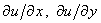
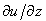

|
10.1. Общие правила.
Запишем трёхмерное дифференциальное уравнение параболического типа,
содержащее производные первого порядка по координатам x, y и z, в следующем общем виде:
Методы численного решения подобных уравнений аналогичны методам, которые используются для решения
трёхмерных дифференциальных уравнений параболического типа, не содержащих первых производных по координатам.
Однако эта аналогия справедлива только при правильном выборе конечных разностей для аппроксимации первых
производных по координатам.
В качестве примера рассмотрим случай
Запишем для уравнения (9.22) схему расщепления, соблюдая правило выбора конечных разностей
для аппроксимации производных  и :
Разностная схема (9.24) имеет первый порядок аппроксимации по каждой переменной:
Каждая из подсхем, являясь аналогом неявной разностной схемы для одномерной задачи (см. раздел 6.3),
абсолютно устойчива и решается с помощью метода прогонки. Коэффициенты, соответствующие уравнению (4.10),
имеют вид:
для первой подсхемы
для второй подсхемы
для третьей подсхемы
Легко видеть, что для всех трёх подсхем достаточное условие сходимости прогонки (4.16) выполняется.
Алгоритм решения разностной схемы (9.24) такой же, как и при отсутствии первых производных по
координатам x, y и z в исходном дифференциальном уравнении ( см. раздел 9.6.4).
|